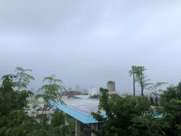
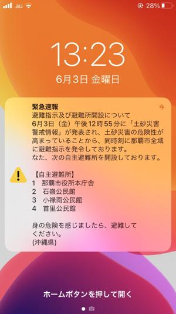

うるがいの話 ある日
最新: 移転【うるがいの話 ある日】とは 一日だけのプログです
『うるがいの話』の最新一日だけのプログで、通信料が少なく経済的だ。カニの画像をクリックすると全ての日付が載る『うるがいの話』サイトを表示します
|
|
【うるがいの話】 うるがい(ｳﾙｶﾞｲ urugai)とは、『もずくがに』の名前でとても大きくなります。 |
|---|---|
|
|
【カミマヤーの話】 猫のことを方言でマヤーといいます。カミマヤー（kamimayaa）とは、神の猫のことです。 |
|
【たながぁの音楽】 たながぁ（ﾀﾅｶﾞｰ tanagaa）とは手長えびのことで、何種類かあり大きいのは車 エビぐらいになります。 |

|
【ぶながぁの話】 ぶながぁ(ﾌﾞﾅｶﾞｰ bunagaa)とは、赤い髪の毛、赤い身体、そして身長は１ｍ２０ｃｍ ぐらい、川の蟹を食べているの目撃された。場所は沖縄県国頭郡大宜味村のと ある村僕の隣近所に住んでいる爺さんから、聞いた話です。 |
|
|
【ギーマの話】 ギーマ(giima)とは、山原の里山に咲くスズランに似た、 花を付けます。実は食べられます、 気が付くと口の周りが紫になっています。 |
2022年06月03日 (金）移転
16:01
 
ヨメのお母さんが、豊見城中央病院から近くの介護老人保健施設に移転した。
絶対家に帰ると駄々をこねられることを恐れていたが、その元気もなく一か月
か２カ月以内の自宅への退院を前提に施設に入った。当初は、豊見城中央病院
の隣にある介護老人保健施設に行く計画だったが、先週急きょ出来ないことに
なり、この施設を調整してもらったがヨメは、この施設は外見からあまり良く
ない（そういう人なのである）、自宅に返そう、施設に断りを入れようかとつ
ぶやく。待て、とりあえず、関係者で調整してくれているので施設を見てみた
らと勧める。ヨメはしぶしぶ、施設へ行く。戻ってくるなり、上等だったとい
う。後は、ヨメのお母さんが移転を納得するかと思っていたが、本人への事前
相談はなく、今日に至る。お義母さんの腎臓はかなり悪化しているらしい、歳
もとしだし延命処置などはしないという条件にしたとヨメは話した。朝の早い
時間は、雨も上がっていたのでベランダに溜まっていた洗濯ものを干した。無
謀だった、過ぎに大雨が・・・、直ぐにとりこみ風呂場で除湿器で除湿した後
乾燥機にかける。緊急速報が今日もスマホに鳴る、変な気候である。
１５時５６分 ビットコインの総資産 ￥１１、４５４↑